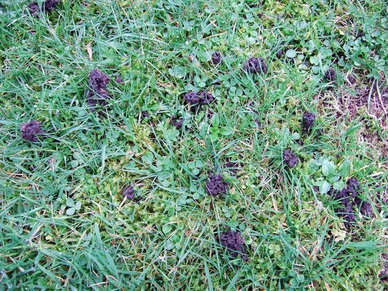
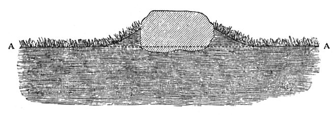
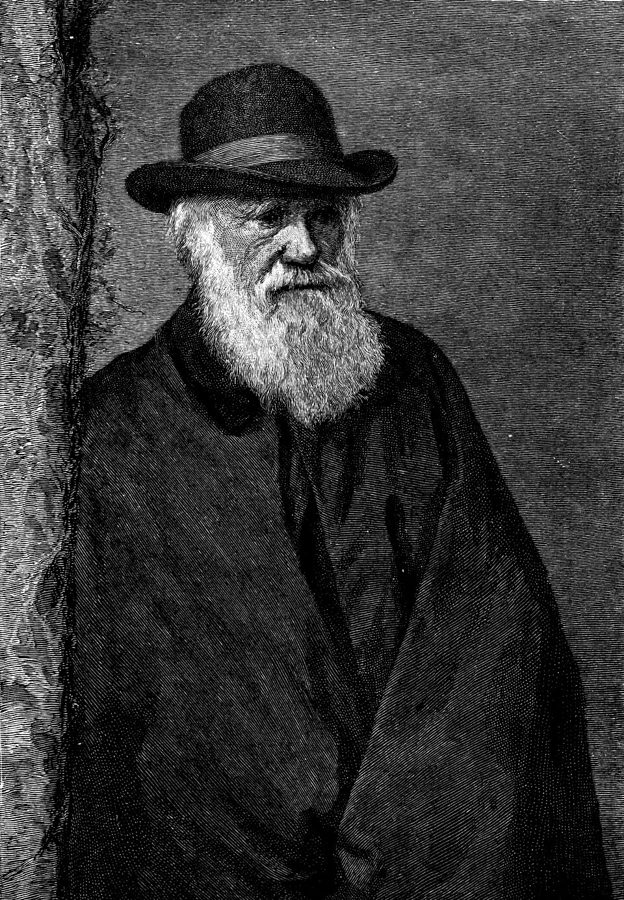

spurred on by
… and then spurred on by The …
又被……推波助澜
spur 是马刺，spur on 是踢马刺催马快跑。这里说宗教争论先由《物种起源》挑起，又被《人类的由来》（1871）推得更凶。
达尔文篇的后半。上一页停在 1837 年那篇蚯蚓论文；这一页跳到四十多年后，达尔文生前出版的最后一本书《腐殖土的形成》（1881）。Phillips 先借两封信说达尔文偏爱「慢而无声的侧攻」，再看这本蚯蚓书赞美了什么、末段和《物种起源》的末段有什么不同，最后讲一位将信将疑的牧师。读的时候抓两条线：蚯蚓做的事（消化、掩埋、保存），和 Phillips 从这些事里读出的道德。

上一页讲了两件事：《物种起源》里自然是一场残酷的战争，达尔文只在写蚯蚓时毫无保留地赞美；1837 年那篇论文里，蚯蚓吞下泥土、掩埋石灰和煤渣，农夫犁地只是笨拙地模仿它们。第 28 段已经预告，达尔文晚年会回到蚯蚓。这一页就是那本晚年的书。序章第 14、43 段说过，从达尔文赞美什么里能看出他的道德；这一页把这句话落到实处。
一本讲蚯蚓粪的书，能「攻击」什么、又能「安慰」什么？
读的时候带着这几个问题。不用先找答案，读完回来对照「检查一下理解」。
§3 最长，走的是「引一段达尔文，读出一层意思」的来回：先借传记作者交代晚年的处境，再用两封信立起「侧攻」这个说法；接着连问两个问题（这本书能说服人什么、攻击什么），随后的答案分三步：书里赞美的东西，蚯蚓的好处是碰巧的，末段和《物种起源》末段的对照。读到第 40 段 Levellers 那一下会觉得突然跳到政治，那是 Phillips 从末段的一个词联想出去的。§4 和 §5 很短，像一段附录：书里一位牧师的故事，最后一段把「挖空」和「保存」并成一件事，还顺手把达尔文和弗洛伊德连起来，给下一篇开门。
作者落在哪：蚯蚓书是达尔文晚年的一次「侧攻」，也是一份不靠上帝的安慰：世界不是为我们设计的，却碰巧被最低等的生物照料着。他说达尔文留给我们一个问题：如果把脚下的土地当真，会怎样活？全篇收在一句「仿佛」上：对蚯蚓来说，保存就在掏空之中。
这一页是原书达尔文篇的第 3–5 节。原书没有小标题，只在节与节之间空一行；粗体的节名是本站起的，斜体是这一节第一段开头的几个词，在电子书里搜它就能跳过去。读完打个勾。
先把这一页用到、作者默认你懂的几个概念讲一遍。讲的是概念本身，作者拿它做什么，读原书时自己看。
赫胥黎（Thomas Huxley）1869 年造的词：上帝存在与否，人没有办法知道，所以既不信，也不断言没有。它和无神论（atheism，断言没有上帝）不同，和有神论（相信有）也不同。打个比方：无神论说「这个函数一定返回 false」，不可知论说「这个函数没有源码，我们算不出它返回什么」。达尔文 1876 年写自传时用了这个词：万物起源之谜人解不开，「我只能满足于做一个不可知论者」。
在这一页：第 33–35 段的两封信都在讲达尔文怎样对待宗教：他不写文章反宗教，只做科学。理解他这个位置，才明白「侧攻」指什么。
这不是固定的术语，是 Phillips 把两个精神分析的词拼起来用。认同（identification）：弗洛伊德的说法，人不知不觉地把别人的样子、立场当成自己的一部分，比如孩子学父母。分裂（splitting）：克莱因（Melanie Klein）等人的说法，把好的和坏的分开放。Phillips 在括号里给了自己的意思：一个人在想象里同时觉得自己有点像几群看似互相排斥的人。比如一位有地产、有投资的绅士，在想象里也能把自己放到最卑微的劳作者中间。
在这一页：第 41 段。Phillips 先说达尔文不是暗地里的社会主义者，再用这个词说达尔文能同时同情对立的几方。
生物把土壤和沉积物翻动、搅拌、重新分层的过程：蚯蚓吞土再排到地面，蚂蚁、白蚁、穴居动物挖洞，海底的虫子翻动泥沙。这个词是 20 世纪才有的，达尔文的蚯蚓书被看作研究它的先驱。今天的土壤学把蚯蚓算作「生态系统工程师」之一；考古学家也要算进这件事：地面上的东西会被蚯蚓粪一层层盖住，慢慢「沉」下去，地层的先后可能被搅乱。

在这一页：第 36 段说考古学家该感谢蚯蚓，第 44–45 段讲罗马城的墙和地面怎样被蚯蚓掏空、下沉。说的都是这件事。
按在书里出现的顺序排，标题前是节号。作品只讲到读懂这一页需要的程度。
科学史家 Adrian Desmond 和 James Moore 1991 年合写了一部很有名的达尔文传记，书名就叫《达尔文》。Phillips 在这一篇里引了它好几次。第 31 段的那段话把达尔文晚年写成「宗教争论把他耗空了，于是转向不招惹争议的题目」。Phillips 接过这个说法，又马上掉转（第 32 段）：达尔文的工作已经让自然本身成了争议，写蚯蚓也不再是避风港，而是换一种方式作战。
第 33 段先说达尔文给儿子写信，转述伏尔泰的教训：正面攻击基督教收效甚微，「慢而无声的侧攻」才有用。这封信写于 1873 年 10 月，主旨其实是劝 George 别急着发表一篇谈宗教的文章（原文见下面「原典」）。紧接着引的「1880 年」那封，Phillips 没说写给谁，读起来像还是写给 George；其实收信人是 Edward Aveling，一位宣传无神论的作家，想把自己的书献给达尔文，达尔文婉拒了。这封信后来在马克思的遗稿里被发现，1931 年起被误传成「达尔文给马克思的回信」，1970 年代才弄清楚。

全名 The Formation of Vegetable Mould through the Action of Worms，后面还带一个副标题「兼论它们的习性」，1881 年 10 月出版，是达尔文生前的最后一本书，半年后他去世。书分两部分：蚯蚓的习性（它们看不看得见、听不听得见，怎样用叶子堵洞口），和蚯蚓做的地质工作（蚯蚓粪有多少，怎样把石头、古迹埋进地下）。据 Darwin Online 的介绍，这本书一年里卖了约六千本，起初比《物种起源》卖得还快。这本书本身，见本站的达尔文的蚯蚓书。
英国内战时期（1640 年代）的激进派，主张法律面前人人平等、扩大选举权、宗教宽容；名字是对手起的，意思是「要把一切拉平的人」。再早，1607 年英格兰中部农民推倒圈地的篱笆、填平沟渠，也被叫作 levellers，这个词本来就和「平整土地」连着。第 40 段 Phillips 从末段的 levelled 联想到他们，说达尔文当然知道平等派是谁。
锡尔切斯特（Silchester）在汉普郡，罗马时代叫 Calleva Atrebatum，城墙至今还在，城里的建筑大多埋在农田下面。James Gerald Joyce 牧师（1819–1878）是附近 Stratfield Saye 的教区长，受第二代威灵顿公爵之托，从 1864 年起在这里发掘了十几年，记录和画图都很细。达尔文写书时他已去世，所以书里说「已故的」。蚯蚓书用了他的记录，Phillips 挑出来的是他起初不信蚯蚓能钻透罗马人的墙这一节。
Phillips 引达尔文时常常只引半句、跳着引。下面把他这一页靠着的几段达尔文原文整段摆出来（达尔文 1882 年去世，原文早已是公有领域），配本站的全译；省略处用 …。
Phillips 说达尔文「提醒 George 想想伏尔泰」。原信的正文劝 George 先别发表那篇谈宗教的文章，「停一停，停一停，停一停」；伏尔泰那句在第二天补的附言里。
I have lately read Morley’s Life of Voltaire & he insists strongly that direct attacks on Christianity (even when written with the wonderful force & vigour of Voltaire) produce little permanent effect: real good seems only to follow from slow & silent side attacks.
本站译：我最近读了莫利写的《伏尔泰传》，他极力主张，正面攻击基督教（哪怕写得像伏尔泰那样有力、有锋芒）也起不了什么长久的作用：真正的好处，似乎只来自慢而无声的侧面进攻。
「侧攻」是莫利对伏尔泰的评价，达尔文转述并表示赞同。同一封信的正文还举了莱尔：他一句话没说过《圣经》的不是，却比正面反驳更有效地动摇了人们对大洪水的信仰。
Phillips 引到 I have confined myself to science 为止。原信接下去还有一句。
Moreover though I am a strong advocate for free thought on all subjects, yet it appears to me (whether rightly or wrongly) that direct arguments against christianity & theism produce hardly any effect on the public; & freedom of thought is best promoted by the gradual illumination of men’s minds, which follows from the advance of science. It has, therefore, been always my object to avoid writing on religion, & I have confined myself to science. I may, however, have been unduly biassed by the pain which it would give some members of my family, if I aided in any way direct attacks on religion.
本站译：再说，我虽然坚决主张在一切问题上都应当自由思考，但在我看来（不知对不对），直接反驳基督教和有神论的论证，对公众几乎起不了作用；思想自由最好的推进方式，是随科学进步而来的、人心逐渐的开明。因此我一向的宗旨是避免写宗教，只谈科学。不过，我也许过分受了一层顾虑的影响：要是我以任何方式协助直接攻击宗教，会让我家里的一些人难过。
最后一句 Phillips 没引。达尔文的妻子 Emma 是虔诚的基督徒。所以达尔文回避宗教，除了策略，还有家人这一层；他自己说，也许是这层顾虑影响过了头。
Phillips 在第 38 段引了开头半句，第 39 段引了其余部分，只少了最后关于珊瑚的那句。下面是全段。
When we behold a wide, turf-covered expanse, we should remember that its smoothness, on which so much of its beauty depends, is mainly due to all the inequalities having been slowly levelled by worms. It is a marvellous reflection that the whole of the superficial mould over any such expanse has passed, and will again pass, every few years through the bodies of worms. The plough is one of the most ancient and most valuable of man’s inventions; but long before he existed the land was in fact regularly ploughed, and still continues to be thus ploughed by earth-worms. It may be doubted whether there are many other animals which have played so important a part in the history of the world, as have these lowly organized creatures. Some other animals, however, still more lowly organized, namely corals, have done far more conspicuous work in having constructed innumerable reefs and islands in the great oceans; but these are almost confined to the tropical zones.
本站译：当我们望见一大片铺着草皮的地面，应当记得：它的平整（它的美多半就在这平整上）主要是因为所有的高低起伏都被蚯蚓慢慢抹平了。想一想真叫人惊奇：这样一片地面上的整层表土，每过几年就要从蚯蚓的身体里穿过一遍，以后还会再穿过。犁是人类最古老、最有用的发明之一；可是早在人出现以前，土地其实就一直在被犁，而且至今还在被蚯蚓这样犁着。恐怕很少有别的动物，在世界的历史上起过像这些身体构造低等的生物这样重要的作用。不过，另有一些构造更低等的动物，也就是珊瑚，干出了显眼得多的工程，在大洋里造了数不清的礁石和岛屿；只是它们几乎只在热带。
Phillips 引文中间有一个省略号，本站用的这个版本在那里并没有别的话。没引的最后一句说珊瑚，正好接回上一页 1837 年的珊瑚论文。另外，达尔文说的 inequalities 指地面的起伏，书里别处也说「草场上所有的高低起伏」，这是第 40 段平等派那个联想的背景。
Phillips 把两处拼在一起：前一处讲一堵墙，后一处在几页之后讲罗马人的地面下沉。
Mr. Joyce was at first very sceptical about the amount of work which I attributed to worms; but he ends his notes with reference to the last-mentioned wall by saying, “This case caused me more surprise and brought more conviction to me than any other. I should have said, and did say, that it was quite impossible such a wall could have been penetrated by earth-worms.” … The sinking must, as it appears to me, be attributed in chief part to the pavement having been undermined by worms, which we know are still at work. Even Mr. Joyce at last admitted that this could not have failed to have produced a considerable effect.
本站译：乔伊斯先生起初对我归给蚯蚓的工作量非常怀疑；但他在关于上面最后说到的那堵墙的笔记末尾写道：「这个例子比其他任何一个都更让我吃惊，也更让我信服。我本来会说，也确实说过，蚯蚓绝不可能钻透这样一堵墙。」……在我看来，地面下沉主要应归因于铺地被蚯蚓掏空了，而我们知道它们至今还在干活。连乔伊斯先生最后也承认，这不可能没有造成相当大的影响。
本站用的版本写的是 very sceptical（非常怀疑），Phillips 第 44 段引的是 at first sceptical，少了 very，可能是版本不同。乔伊斯「最后承认」的话是双重否定，语气是肯定的；他让步到「相当大的影响」，没说是「主要原因」。
你用 Kindle，单个生词长按就能查，这里只收词典帮不上的：Phillips 的悖论和警句，每个词都认识、合起来拐了弯的说法，英式口语和学术腔，典故和双关。斜体小字是原句里连续的几个词，错字照电子书原样，搜它就能跳到那里。
读不通的扫描错字和多出来的引号：
They buried to renew: they digested to restore.— §3 第 36 段。本站译：它们埋葬，为了更新；它们消化，为了修复。
两个短句，同一个结构：动词是平常意义上的终结（埋、消化），目的却是重新开始（更新、修复）。这句话把蚯蚓做的事全收在一起，也是全书题目「生命故事 / 死亡故事」的缩影：死亡的那一头接着生命。
as though, when it comes to worms, the conservation is in the undermining, although neither thing is the worm’s intention— §5 第 48 段。本站译：仿佛就蚯蚓而言，保存就在掏空之中，尽管两者都不是蚯蚓的本意。
先看开头的 as though：Phillips 是在提出一种看法，不是断言。再看结尾：不是蚯蚓的本意。破坏和保存是同一个动作的两面，都是结果，不是意图。这和第 37 段「碰巧有益」一脉相承，同一句的后半他就把这套说法用到达尔文自己身上。
读完这一页的几节再看。下面是作者在这几节里的论点，由本站按论点重新组织，不按原书的顺序；每条上方是依据所在的段落，拿不准就回书里那几段再读一遍。
达尔文晚年厌倦了宗教论战，但不肯正面攻击宗教：信里说直接的反驳没用，靠科学慢慢开启人心才行。Phillips 认为，最能体现这种「讲究手法的科学」的，就是这本满是实验、又满是迂回论证的蚯蚓书。
§3 第 30–35 段书里没有斗争和战争，只有蚯蚓不停的劳作：消化、掩埋，替考古学家保存过去，替种子备好土壤。Phillips 把这读成一种不需要上帝的「世俗来世」：人死了，世界照样被维护下去。
§3 第 36、40 段蚯蚓只是为了自己活下去、繁衍而进食，好处是顺带的。Phillips 认为，这也许（may be）比「世界是为我们设计的」更值得惊叹；这并不推翻《物种起源》，而是在自然之战之外补上另一面。
§3 第 37、41 段两本书的末段都从眼前的风景讲到背后看不见的力量；《物种起源》是自然之战，蚯蚓书是蚯蚓在犁地。Phillips 还从「抹平不平」「低等生物」里听出对社会和神学等级的暗讽，他说的是暗示（intimation），接着又说，说达尔文是暗地里的社会主义者就太傻了。
§3 第 38–42 段乔伊斯牧师起初不信蚯蚓能钻透罗马人的墙，看了实例才信服；对地面下沉，他最后承认蚯蚓的影响相当大，却没像达尔文那样说主要是蚯蚓干的。Phillips 用一句「仿佛」收束：蚯蚓又破坏又保存，都不是有意的；达尔文的工作至少在效果上也是如此。他还说，达尔文和弗洛伊德一样关心破坏怎样保存生命。
§4 第 44–45 段，§5 第 46–48 段合起来：Phillips 在序章说要从两人赞美的东西里找他们的道德，这一页给出达尔文那一半：卑微的、不图回报的、碰巧有益的劳作，把死亡和埋葬变成延续。Phillips 说达尔文留给读者的问题是：如果把脚下的土地当真，人会怎样活。
达尔文篇合起来：小猎犬号之后，达尔文看到的自然又丰饶又残酷，他的散文在赞叹和不安之间摇摆；只有写蚯蚓时，他毫无保留地赞美。从 1837 年的论文到 1881 年的书，蚯蚓教给他的是同一件事：看得见的地面是地下漫长故事的结尾，最低等的生物在默默维护世界，人犁地只是在笨拙地模仿它们。Phillips 认为，这是达尔文在一个没有上帝、没有进步保证的世界里找到的安慰，也是他对付宗教和等级的迂回写法。
读完作者的论点，再看它站不站得住。每一块摆出三样：主流怎么看，作者怎么看，本站的评论。最后一句是本站对这一页的总体判断。
主流看法：科学史一般把这本书看作达尔文一生方法的收官：微小的作用乘以漫长的时间，能改变地面，正如它能改变物种；书的前半还用实验讨论蚯蚓有没有一点智力，接着他关于动物心智连续性的研究。他对蚯蚓的兴趣从 1837 年断断续续延续到 1881 年。
作者的看法：两封信说明达尔文偏爱迂回，蚯蚓书就是他「讲究手法的科学」的最好代表，满是间接论证和侧攻（第 33–35 段）。
本站的评论：两封信是真材实料，但都比 Phillips 引的复杂：「侧攻」是转述莫利评伏尔泰，给 Aveling 的信还说自己也许是顾虑家人。说达尔文回避正面冲突，有据；说蚯蚓书是一次有意的侧攻，是 Phillips 的引申。把它当成一种读法很有启发，当成达尔文的意图，证据不够。
主流看法：inequalities 在达尔文书里是地面的高低起伏，书里别处也这样用；lowly organized 是当时生物学的常用说法，指身体构造简单。没有材料说达尔文写末段时想到了平等派。
作者的看法：达尔文当然知道平等派是谁；「低等生物在世界历史上起过重要作用」是对时事的侧攻（第 40 段）。但他也承认，说达尔文是暗地里的社会主义者很傻，只说达尔文能同时同情对立的几方（第 41 段）。
本站的评论：这是全页最弱的一环，靠的是双关和联想。末段最后一句 Phillips 没引：珊瑚比蚯蚓「更低等」，功劳更显眼。这句话把末段拉回自然史的比较，冲淡了阶级的弦外之音。读的时候可以把它当作 Phillips 的联想，不必当成达尔文的意思。
主流看法：当时就有人不信：达尔文在书的开头自己提到，1869 年有人只因为觉得蚯蚓又弱又小，就否定了他 1837 年的结论。今天的土壤学大体站在他这边：蚯蚓是形成和翻动土壤的主要生物之一，被称为生态系统工程师，「生物扰动」成了专门的研究领域；具体的数字有修正。
作者的看法：Phillips 不讨论这些结论对不对，只读达尔文怎样赞美蚯蚓：它们勤劳、聪明得出人意料，被人低估了（第 37、42 段）。
本站的评论：这一点对理解 Phillips 有帮助：达尔文的赞美不是空抒情，背后是几十年的测量，比如一块石头三十五年沉了一英寸半。所以「把脚下的土地当真」在达尔文那里先是一个科学结论，然后才是 Phillips 读出的道德。
本站的总体看法：这一页最可信的，是 Phillips 对蚯蚓书语气的观察：它确实不哀悼、不谈斗争，满是对卑微劳作的赞叹，「碰巧有益」也是达尔文式的思路。关于宗教和阶级的「侧攻」，读作 Phillips 的联想更稳妥，信的原文本身比他引的更复杂。
先在心里答，再点开。答错的那题，回书里把对应那一节再读一遍。
只同意一半。他接受达尔文被宗教争论耗空了，但说达尔文的工作已经让自然本身成了争议，写蚯蚓不是退避，而是换一种方式作战。
书里的埋葬不是结束：蚯蚓把东西埋起来，替考古学家保存过去，又替种子备好土壤。它庆祝消化和劳作的力量，不哀悼失去。
蚯蚓只是为自己活下去而进食，对人的好处是顺带的；设计论则认为世界本来就是为人造的。Phillips 认为，碰巧对我们友好的世界也许更值得惊叹。
《物种起源》末段是生长、遗传、变异、生存斗争和自然选择，也就是自然之战；蚯蚓书末段是蚯蚓年复一年地把表土吞下、排出，像犁一样翻地。
他原本说蚯蚓绝不可能钻透那堵墙，看到实例后说最吃惊、也最信服；对地面下沉，他最后只承认蚯蚓「不可能没有造成相当大的影响」，没承认主要是蚯蚓干的。
蚯蚓掏空墙基和地面，罗马遗迹塌陷，却因此被埋起来保存。他把它用到达尔文身上：达尔文的工作动摇了旧观念，又保存了过去，至少在效果上是这样。
用一句话说这一页，写给一个没读过的人。
想一想：你身边有没有「蚯蚓」：做着不起眼的维护工作、不图被看见，却让一切照常运转的人或事？你平时给了它多少分量？
读过又忘了，从这里想起来。挑的是这一页最值得记住的场面、原文和说法，不按原书顺序；每条后面是节号，想细看就回书里那一节。全书各页的这一节都收在全书回顾。
一句话：达尔文的最后一本书写蚯蚓：它们埋葬、消化，碰巧保存了过去、养育了未来；Phillips 说这是一份不靠上帝的安慰，也是一次慢而无声的侧攻。
达尔文 1873 年给儿子的信里转述《伏尔泰传》：正面攻击基督教没用，侧攻才有用。Phillips 说蚯蚓书就是这样写成的。
§3蚯蚓埋了东西又让土地肥沃，人死后世界照样被维护。Phillips 说这本书满是埋葬，却是「反挽歌」。
§3蚯蚓书的末段：人还没出现，土地就一直在被蚯蚓犁着。这是对《物种起源》末段的重奏，看不见的力量从自然之战换成了蚯蚓。
§3蚯蚓只是为自己进食，好处是顺带的。世界不是为我们设计的，却可以碰巧对我们友好。
§3乔伊斯牧师不信蚯蚓能钻透罗马人的墙，看到实例才服气；对地面下沉，他最后才承认「不可能没有造成相当大的影响」。
§4蚯蚓掏空墙基，遗迹塌下去，也就被埋起来保存了。Phillips 说达尔文的工作也是这样，至少在效果上。
§5